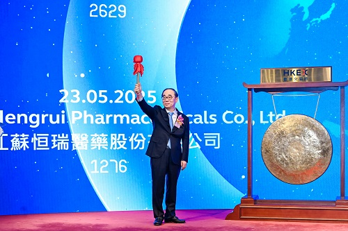
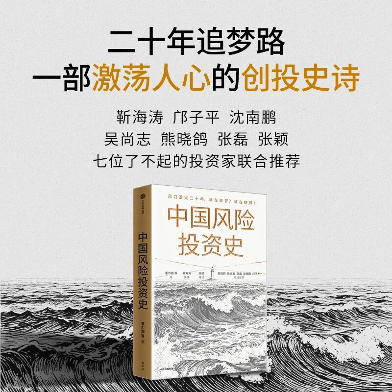
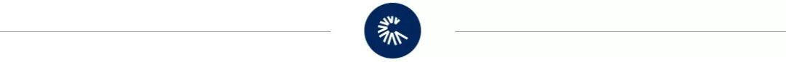

💊 江苏首富，投出史上最贵减肥药
Jiangsu's richest man backs the most expensive weight-loss drug IPO ever
中国医药产业其实是Kailera本次史诗heroic[hɪˈroʊɪk] n. 史诗；英勇行为级IPO的最大赢家。
手搓量丨100% AI含量丨0%
一直以来，减肥药都人们公认的“智商税”重灾区，因为“肥胖”不是绝对意义上的“病”，没有一个明确的definite[ˈdɛfənət] adj. 明确的;一定的“致病因素”，产生机制千奇百怪，而人体又过于“个性化”——不同的人有不同的代谢率、有不同的肠道菌群、有不同的胰岛素敏感性和激素水平——只要稍微认真琢磨一下就能想明白，任何一款减肥药都无法做到“通用有效”。
更重要的crucial[ˈkruːʃl] adj. 重要的；决定性的；定局的；决断的是，人类是地球生物，遵循“能量守恒”这个基础的世界法则，减肥本质就是确保“每日摄入能量持续小于每日摄入”。一个人想要在不彻底改变生活习惯的accustomed[əˈkəstəmd] adj. 习惯的，适应的(一般作表语)；惯常的前提下，通过药物强行实现“减重”，最终结果只能是“病态的消瘦”，严重影响身心健康。
但GLP-1类药物的出现arise[əraɪz] v. 出现；上升；起立冲击了上述的一切。GLP-1是胰高血糖素样肽-1的简称，是一种人体能够enable[ɪˈneɪbl] v. 使能够，使成为可能；授予权利或方法自然形成的激素，人人都有、人人受用。这种激素可以减缓胃部的排空速度，让人们保持conservation[ˌkɑnsərˈveɪʃən] n. 保存，保持；保护更长时间的饱腹感。也能刺激大脑中负责产生breed[brid] v. 繁殖；饲养；产生“饥饿感”的下丘脑，让它产生“已经吃饱了”的信号。
唯一的sole[soʊl] adj. 单独的,唯一的缺点就是自然产生的GLP-1激素分解速度很快，无法长时间地停留在体内，一不留神“猪瘾”就会再次占领理智高地。而所谓GLP-1类减肥药，就是科学家们成功地模拟出了与GLP-1的蛋白表达高度相同的alike[əˈlaɪk] adj. 相似的；相同的“合成物”，让类GLP-1激素源源不断地出现在体内循环当中。
也就是namely[ˈneɪmli] adv. 即,也就是说，人类通过服用GLP-1类药物首先改变的是生活习惯、降低食欲，然后才自然而然达到“减重减肥”的效果。这比过去那些强行提高enhance[ɛnˈhæns] v. 提高；加强；增加代谢率的减肥药科学多了。
因此accordingly[əˈkɔrdɪŋli] adv. 因此，于是；相应地；照著近几年来，GLP-1类药物逐渐成为了减肥市场的主流，诞生了类似司美格鲁肽、替拉帕肽这些每年营收破百亿美元的爆款单品。而研发生产GLP-1类药物的医药公司也在这个过程中赚得盆满钵满，不断创造coin[kɔɪn] v. 铸造（货币）；杜撰，创造财富神话。而现在，神话再临：近日，减肥类药物研发商Kailera顺利登陆纳斯达克，募资总额达到accomplish[əˈkɑmplɪʃ] v. 完成；实现；达到了6.25亿美元（约合人民币42.7亿元），成为了生物科技产业史上募资规模最大的IPO，整体市值也快速突破了30亿美元。
尤其值得merit[ˈmɛrət] v. 值得一提的是，中国医药产业其实是Kailera本次史诗级IPO的最大赢家。因为Kailera之所以能够成为GLP-1类药物研发商中的佼佼者，一切都要从2024年与中国创新药巨头恒瑞医药的合作collaborate[kəˈlæbərˌeɪt] v. 合作；勾结，通敌讲起。
先讲一个冷知识：虽然司美格鲁肽、替拉帕肽这些减肥神药的名字十分bully[ˈbʊli] adv. 很；十分 int. 好；妙“年轻”，近几年才被大众所熟知，但其实GLP-1的药理机制早在1980年代就被发现了。甚至早在1983年，科学家scientist[ˈsaɪəntɪst] n. 科学家们就成功地克隆了胰高血糖素原基因，还成功分离出了GLP-1的特定活性形式。
也就是说，GLP-1可以用来减肥这件事，人类都快知道acquaintance[əkˈweɪntəns] n. 熟人；相识；了解；知道小半个世纪了。
那为什么GLP-1类药物直到最近几年才成为爆款，进入entrance[ˈɛntrəns] n. 入口；进入大众视野呢？客观上的原因，就是过去没那么多胖子，上个世纪全世界的universal[ˌjunəˈvərsəl] adj. 全体的,宇宙的,世界的；普遍的，通用的主要课题是“不再饥饿”，减肥并不是大众的主流需求。主观上的原因，就是GLP-1药物的研发过程太复杂了，大部分bulk[bəlk] n. 体积，容量；大多数，大部分；大块GLP-1类药物是由多达40个氨基酸组成的多肽，每添加一个氨基酸需数小时，严重制约生产效率。与此同时，正如前面所提到的，天然形成的GLP-1激素半衰期很短，会在人体体内快速被分解analyze[ˈænəˌlaɪz] vt. 分析； 分解。因此在完成多肽合成后还需要通过复杂的complicated[ˈkɑmpləˌkeɪtəd] adj. 难懂的，复杂的分子修饰（如连接脂肪酸或使用聚乙二醇化技术）来制备长效（每周一次）制剂。
除此而外，大规模生产需要能够处理三氟乙酸等危险溶剂的专业设备，纯化过程复杂且损耗率极高，无限推高了基础设施infrastructure[ˈɪnfrəstrʌktʃə] n. 基础设施；公共建设；下部构造建设的成本。总之多年以来，人们虽然知道GLP-1用来减肥既有效又相对健康，但也很难成为产品开发exploit[ˌɛkˈsplɔɪt] v. 开发，开拓；剥削；开采的首选，账面上根本算不过来。
这种行业，太适合adjust[əˈʤəst] v. 调整，使…适合；校准基建狂魔下场了。
在经典的classical[ˈklæsɪkəl] adj. 古典的；经典的；传统的；第一流的“基建狂魔”叙事里，中国之所以能够不断地颠覆产业格局，主要原因有两个：一个是物流、产线、厂房、原材料等基础设施的不断完善，能够创造巨大的成本优势；另一个是庞大且不断增长的人才储备，确保所有计划得到充分、稳定地steady[ˈstɛdi] adv. 稳定地；稳固地执行。高成本、高风险、长周期、固定资产投入庞大的enormous[ɪˈnɔrmɪs] adj. 庞大的，巨大的；凶暴的，极恶的医药行业显然很受用这一套，在过去十年里整个产业那是结结实实地完成了颠覆式的“迁徙”。
例如据《美国医学会杂志periodical[ˌpɪriˈɑdɪkəl] n. 期刊；杂志》（JAMA）统计，2015年的时候全球48%的药物早期研发在美国进行，只有8%在中国进行。到了2025年，美国在药物早期研发中的占比下降到了35%，而中国则完成attain[əˈteɪn] v. 完成；获得；达到了反超，达到了40%。同期（也就是2020年到2024年之间），美国企业向中国药企支付的研发预付款用达到了81亿美元。而再往前5年的统计区间内，这个数字仅仅mere[mɪr] adj. 仅仅,只不过只有5.36亿美元。变化variation[ˌvɛriˈeɪʃən] n. 变化；[生物] 变异，变种毫无疑问是天翻地覆的。
同样的逻辑，技术复杂、固定投入巨大、研发难度高的GLP-1类药物如果想要彻底走出实验室lab[læb] n. 实验室，研究室，走向大众市场，中国是无可争议的首选，中国也不负众望地兑现了人们的预期：
基础设施方面angle[ˈæŋgəl] n. 角度，角，方面，目前中国是世界上最大的GLP-1类药物活性药物成分（API）出口国，超过50%的原材料来自中国。仅2024年中国向美国出口exit[ˈɛksət] n. 出口，通道；退场的原材料就够生产出10亿支司美格鲁肽注射液。研发方面aspect[ˈæspekt] n. (问题等的)方面；样子, 外表, 面貌，有数据统计显示目前中国市场范围内共有60-70个处于后期研发阶段的GLP-1类药物在研项目，其中有大约20哥属于下一代双靶点或三靶点激动剂（靶向GLP-1加上GIP和/或胰高血糖素受体）、至少有8个属于口服小分子制剂（可以最终变成不需要打针的“快消品”）。
说一句“遥遥领先”，一点epoch[ˈɛpək] n. [地质] 世；新纪元；新时代；时间上的一点也不夸张。饶是辉瑞、礼来、诺和诺德、阿斯利康这些制药巨头在进军GLP-1类减肥药市场的时候，最优先地选择也是和中国的医药企业展开合作cooperate[kˈwɑpərˌeɪt] v. 合作，配合；协力，获取IP授权与产线。Kailera的创业故事就更加有代表ambassador[æmˈbæsədər] n. 大使；特使，(派驻国际组织的)代表性了。
Kailera这家公司非常年轻，故事的开头发生contemporary[kənˈtɛmpərˌɛri] adj. 现代的,当代的；发生[存在]于同一时代的在2023年。当时还是贝恩资本生命科学团队合伙人的阿米尔·扎马尼（Amir Zamani）对减肥药市场产生了浓厚的dense[dɛns] adj. 稠密的；浓厚的；愚钝的兴趣。尤其当年诺和诺德推出的司美格鲁肽产品Ozempic席卷北美，根据计算每年能够创造的收入skim[skɪm] n. 撇；撇去的东西；表层物；瞒报所得的收入将达到140亿美元，这让阿米尔·扎马尼心动不已，一头扎进了GLP-1类减肥产品的研究当中。
功夫不负有心人。2024年，阿米尔·扎马尼找到了自己的减肥药事业enterprise[ˈentəpraɪz] n. 事业,企(事)业单位；事业心,进取心突破口。这一年，他来到了中国江苏。在中国最大的创新药研发商之一恒瑞医药的实验室laboratory[ləˈbɒrətri] n. 实验室， 研究室里，他看到了一款正在研发当中的GLP-1类药物。这款药品与Ozempic一样，原理都是通过调节人体内的GLP-1激素来控制食欲，进而达到减肥的效果，并且还取得了足够媲美礼来与诺和诺德的临床数据：当时进行的二期临床试验结果显示，59%的受试者在周期性使用8毫克剂量药物36周后，体重减轻slim[slɪm] v. 使…体重减轻；使…苗条了20%或更多，且副作用轻微。
受此鼓舞的阿米尔·扎马尼迅速推进了与恒瑞医药的合作cooperation[kəʊˌɒpəˈreɪʃn] n. 合作，Kailera也就由此诞生了。2024年10月，Kailera宣布完成A轮融资，总规模为4亿美元，投资方包括生物医药领域内老牌投资机构apparatus[ˌæpərˈætəs] n. 器械，器具，仪器；机构，组织Atlas Venture、RTW Investments、阿米尔·扎马尼的老东家贝恩资本，当然也包括共同研发减肥药的恒瑞医药。

（2025年5月，恒瑞医药登陆港股，创始人founder[ˈfaʊndə] n. 创始人孙飘扬敲钟。来源：恒瑞医药pharma[ˈfɑːmə] n. 医药官网）
早在2024年5月，恒瑞医药就发布公告称将具有自主知识产权的GLP-1产品组合有偿许可给一家名为Hercules的美国公司，Hercules公司将获得acquire[əkˈwaɪər] v. 获得；取得；学到；捕获在除大中华区以外的全球范围内开发、生产和商业化GLP-1产品组合的独家权利。而这家Hercules正是Kailera的前身，由阿米尔·扎马尼牵头，贝恩资本生命科学基金、Atlas Venture、RTW Investments等投资invest[ɪnˈvest] v. 投资；覆盖；耗费；授予；包围方共同设立。
根据协议accord[əˈkɔrd] n. 一致， 符合；协议， 条约，Hercules支付给恒瑞医药的首付款和近期里程碑总计1.1亿美元，销售里程碑款累计不超过57.25亿美元。与此同时，恒瑞医药将获得acquisition[ˌækwɪˈzɪʃn] n. 获得物，获得；收购Hercules公司19.9%的股权。2025年10月，Kailera完成了总规模为6亿美元的B轮融资，引进了加拿大养老基金、卡塔尔投资局（QIA）等新投资方，稀释了恒瑞生物creature[ˈkriʧər] n. 动物;生物的一部分股份。但根据招股书显示exhibit[ɪgˈzɪbɪt] v. 展览；显示；提出（证据等），上市前恒瑞医药仍然是第二大股东，还持有13.9%的股份。
当然了，截止目前Kailera还没有创造invent[ˌɪnˈvɛnt] v. 发明,创造；捏造,虚构收入，目前所使用的资金全部都来自于此前的几轮投资。根据招股书显示，IPO之前Kailera的现金流为5.46亿美元，将全部用于研发和日常的everyday[ˈɛvriˈdeɪ] adj. 每天的，日常的公司运营活动中。Kailera之所以能够在本次IPO中超额募资到6.25亿美元，远超此前预期的4.587亿美元，最主要的arch[ɑrʧ] adj. 主要的依据还是临床试验中的好消息。
例如去年7月，恒瑞医药与Kailera公布advertise[ˈædvərˌtaɪz] v. 为...做广告；公告，公布的利布帕肽（一种GLP-1/GIP双受体激动剂多肽）的三期临床试验结果。在三期临床试验中，受试者接受acceptance[əkˈsɛptəns] n. 正式接受；接纳；接受，赞同，赞成，认可了为期48周的治疗，每周注射一次，平均体重减轻了18%。与此同时，大多数治疗cure[kjʊr] n. 治愈，治疗期间出现的不良事件为轻度至中度，且与胃肠道相关。Kailera在招股书中也明确提到了这一实验数据，表示他们相信利布帕肽的治疗效果将优于诺和诺德的司美格鲁肽产品Ozempic、礼来公司的替西帕肽Zepbound，只不过merely[ˈmɪrli] adv. 仅仅，只不过全球三期临床试验预计要到2028年才能最终完成。
再例如今年3月，恒瑞医药与Kailera公布了口服利布帕肽开展II期临床试验结果，数据非常积极：166例受试者在第26周时平均体重较基线下降最高达12.1%，且未观察到减重平台期，而副作用“呕吐”的发生率incidence[ˈɪnsɪdəns] n. 发生率最高仅为11.4%。Kailera首席医疗官斯科特·沃瑟曼（Scott Wasserman）表示，“Kailera将在今年的晚些时候开启全球2期临床试验，我们相信belief[bɪˈliːf] n. 相信，信赖；信仰；教义口服利布帕肽将是减肥市场中的颠覆性产品。”
另外还有一个值得注意notable[ˈnoʊtəbəl] adj. 值得注意的，显著的；著名的的信息是，2023年以来，包括Kailera在内至少已经八家国际药企寻求与中国药企合作，共同研发GLP-1类减肥药。这其中除了上面提到的辉瑞、诺和诺德、阿斯利康，还包括comprise[kəmˈpraɪz] v. 包含，包括，由...组成；构成，组成默克（Merck & Co.）、再生元（Regeneron）。
换个角度来说，Kailera的产品能否脱颖而出，能否成为新一代减肥药更受欢迎greeting[ˈɡriːtɪŋ] v. 致敬，欢迎（greet的现在分词）的那一个，一切都还是未知数。
但一切似乎只是时间问题，所有人holder[ˈhoʊldər] n. 持有人；所有人；固定器；（台、架等）支持物都对此充满信心。Kailera首席执行官让·雷诺（Ron Renaud）在接受媒体采访时表示：“我们的计划将严格按照时间表推进，几乎不barely[ˈbɛrli] adv. 勉强才能；几乎不会有任何偏离。我们对目前正在进行的工作感到非常deadly[ˈdɛdli] adv. 非常；如死一般地满意。另外你也能够（通过approve[əˈpruv] v. 批准，通过；(of)赞成，赞许，同意这次IPO）感受到资本市场的脉搏，我们也能够由此判断出我们有机会在市场中取得有利地位。”
更何况让·雷诺本身就是Kailera的核心竞争compete[kəmˈpiːt] v. 竞争；争夺，竞争力之一。在受聘加入Kailera担任首席执行administer[ədˈmɪnɪstər] v. 管理；执行；给予官之前，让·雷诺拥有三段成功的医药行业创业经历，分别是丙型肝炎药物研发商Idenix、mRNA疗法研发商Translate Bio、神经系统疾病药物研发商Cerevel。这三家公司都成功开发出emit[ɪˈmɪt] v. 发出，放射；发行；发表了颇受业界好评的产品，也都在高位套现给了大厂，累计价值达到了160亿美元。可以说，让·雷诺就是目前世界上最好的crack[kræk] adj. 最好的；高明的医药职业经理人之一，他的加入完全能作为Kailera路线正确与否的“象征”。
（Kailera首席执行enforce[ɛnˈfɔrs] v. 实施，执行；强迫，强制官让·雷诺，来源：个人社媒）
事实上practically[ˈpræktɪkəli] adv. 实际地；几乎；事实上，让·雷诺在今年年初的一次专访中也正面回应了前面提到的这层不确定性。当时记者抛出了一个尖锐的问题：“减肥药是目前生物医药领域竞争最激烈的acute[əˈkjut] adj. 严重的，[医] 急性的；敏锐的；激烈的；尖声的赛道，Kailera到底有什么独特之处？你选择加入Kailera而不是其他医药公司，到底是看中了哪些东西clay[kleɪ] n. [土壤] 粘土；泥土；肉体；似黏土的东西？”
让·雷诺回答说：“有人都聊到了这点，认为如今市场已被两家公司（诺和诺德与礼来）垄断——这在医药领域里是从未出现过的状态shatter[ˈʃætər] n. 碎片；乱七八糟的状态，想要进入这个市场将非常困难……但你可以参考一下他汀类药物、免疫肿瘤学和炎症治疗，大多数情况下，取得最大成功的是第三、第四甚至第五个进入市场的候选药物……当回顾这些老故事，你就会明白，对于一个规模庞大、且被普遍认为现有疗法未能充分满足需求的潜在市场而言，市场的需求是远远被低估的。这（Kailera的出现dawn[dɔːn] v. 破晓；出现；被领悟）对我们来说是好事，对患者来说更是好事。”
精明且懂行的职业经理人+潜力无限的infinite[ˈɪnfənət] adj. 无限的,无穷的市场+中国制造的支持，你看Kailera确实具备了成功的一切条件。
唯一的solitary[ˈsɑləˌtɛri] adj. 单一的，唯一的；单独的，无伴的；喜欢独处的，不喜与人接触的黑天鹅，或许还是“地缘政治”。去年年底，特朗普曾经签署了一份非常不友好的distant[ˈdɪstənt] adj. 遥远的；冷漠的；远隔的；不友好的，冷淡的《生物安全法案》，该法案禁止联邦政府与“令人担忧的生物技术公司”进行商业往来。虽然该法案并未将中国生物技术公司直接列入名单，但能够对美国生物技术产业带来“令人担忧级别威胁cow[kaʊ] v. 威胁，恐吓”，也只剩下中国了。而到了今年4月，特朗普政府干脆直接明牌了，美国食品药品监督管理局局长马蒂·马卡里（Marty Makary）在一次员工简报会上表示bid[bɪd] v. 投标；出价；表示；吩咐“我们在药品领域面临的最大威胁来自中国”，认为中国在药物测试和研发方面的领先地位“是一个重大问题，我们不能忽视”。
这样来看，Kailera也不是没有成为美国Manus的可能likelihood[ˈlaɪkliˌhʊd] n. 可能性，可能。当然，白宫的上述政策能否维持preserve[prɪˈzərv] v. 保存；保护；维持；腌；禁猎到2028年，也是一个未知数。


转载、合作、加入粉丝群请联系connexion[kəˈnɛkʃən] n. 联系， 连接小助理
（微信号：ChinaVentureWeixin）